Tu servidor de Minecraft Bedrock, en tu consola
Entra desde tu Xbox o PlayStation a Aternos, a servidores con Geyser o a cualquier servidor público. Sin DNS, sin PC y sin ver anuncios para conectarte.
Your Minecraft Bedrock server, on your console
Join Aternos, Geyser or any public server from your Xbox or PlayStation. No DNS, no PC, and never an ad to connect.
マイクラ統合版の外部サーバーに、ゲーム機から参加
PS5・PS4・Xboxから、Aternos、Geyserを入れたサーバー、そのほかの公開サーバーに参加できます。DNS設定もPCも不要で、接続のために広告を見る必要もありません。
¿No abre el enlace? Busca «BridgePlay Bedrock» en tu tienda. Link not opening? Search "BridgePlay Bedrock" in your store. リンクが開かない場合は、ストアで「BridgePlay」と検索してください。
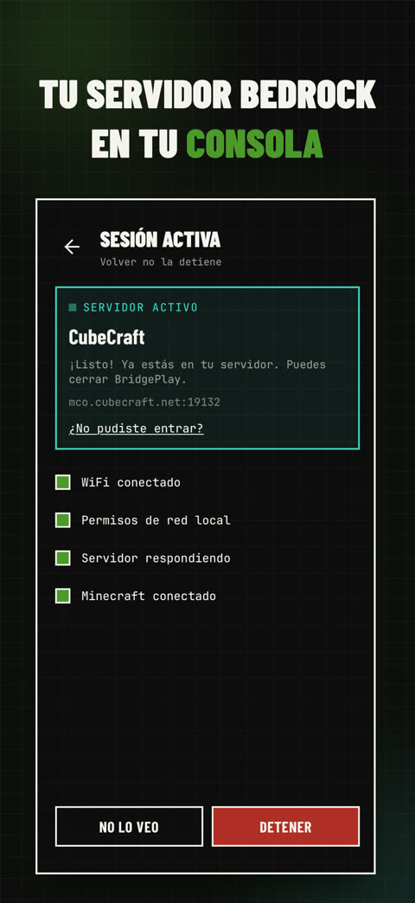
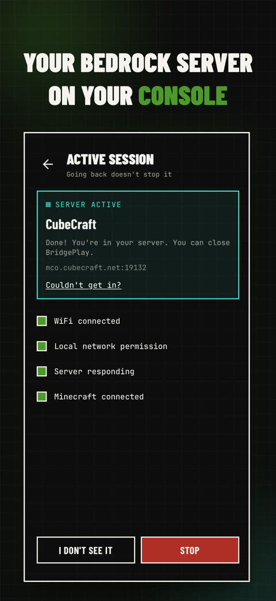
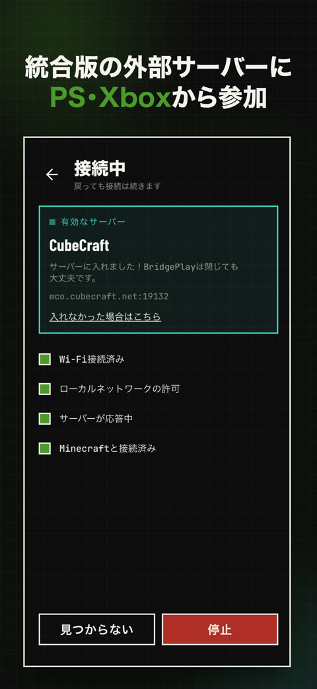
- Guarda la dirección y el puerto de tu servidor.Aternos, Geyser o uno público. También puedes pegar uno que te compartió un amigo.
- Toca «Activar para Minecraft».Tu teléfono hace de puente en tu WiFi.
- En la consola: Jugar → Mundos.Elige el mundo que dice LAN. Si la consola entra directo al servidor, puedes cerrar la app.
- Save your server's address and port.Aternos, Geyser or a public one. You can also paste one a friend shared with you.
- Tap "Activate for Minecraft".Your phone becomes the bridge on your WiFi.
- On your console: Play → Worlds.Pick the LAN world. If your console joins the server directly, you can close the app.
- サーバーのアドレスとポートを保存します。AternosやGeyser、公開サーバーもOK。フレンドから共有されたサーバーは、貼り付けるだけで追加できます。
- 「Minecraftで有効化」をタップします。スマホが同じWi-Fiの中で橋渡し役になります。
- ゲーム機で「プレイ」→「ワールド」を開きます。「LAN ゲーム」にあるサーバーを選んで参加します。直接参加できたら、アプリは閉じてOKです。
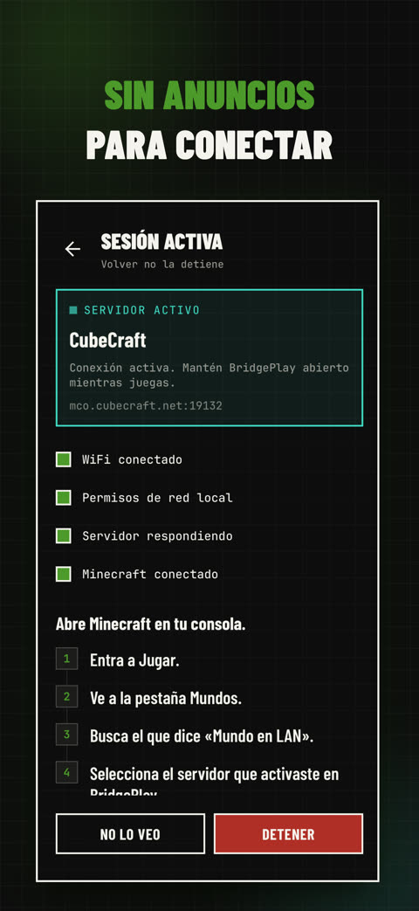
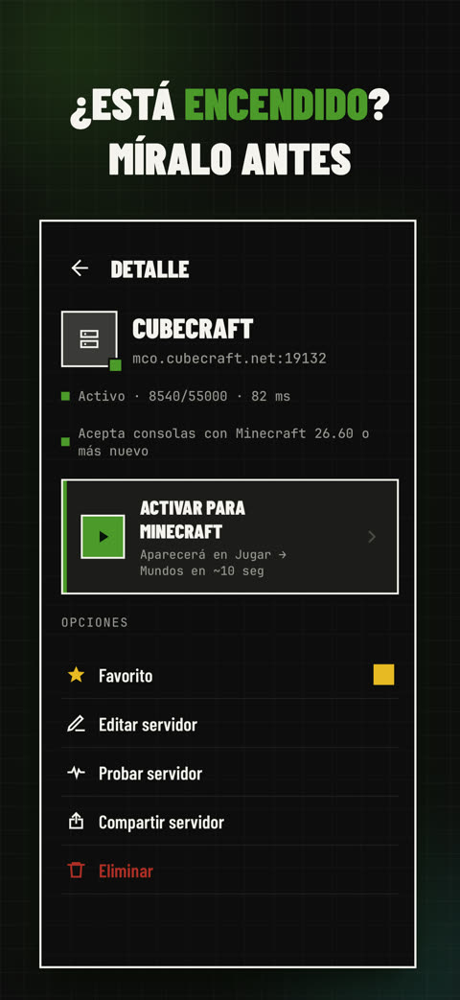
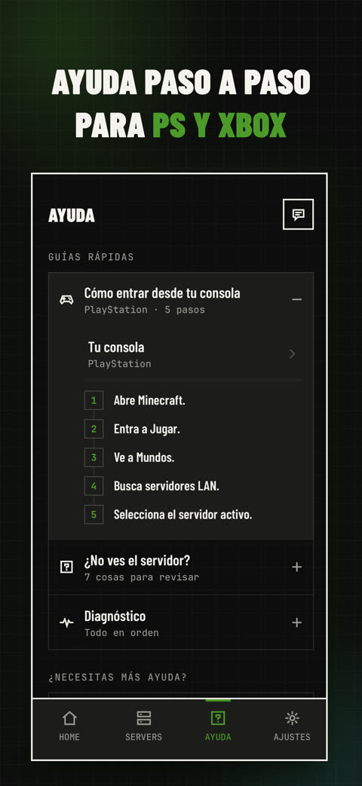
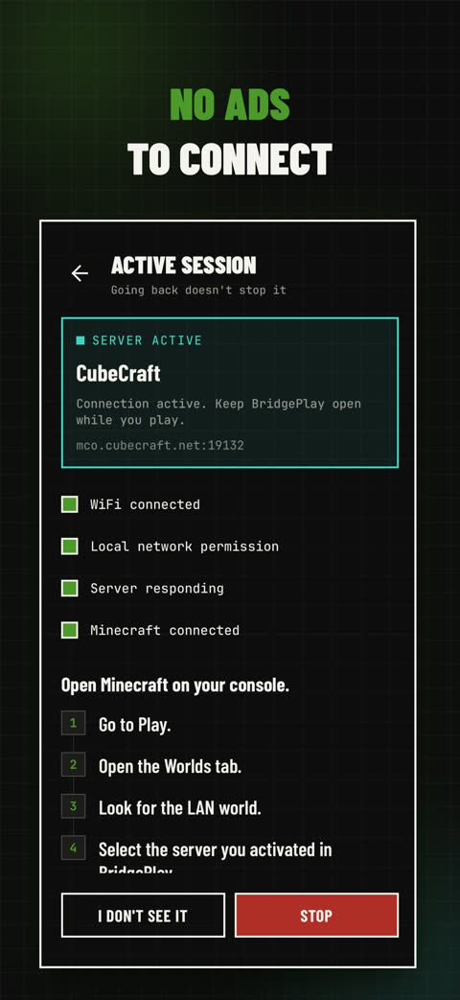
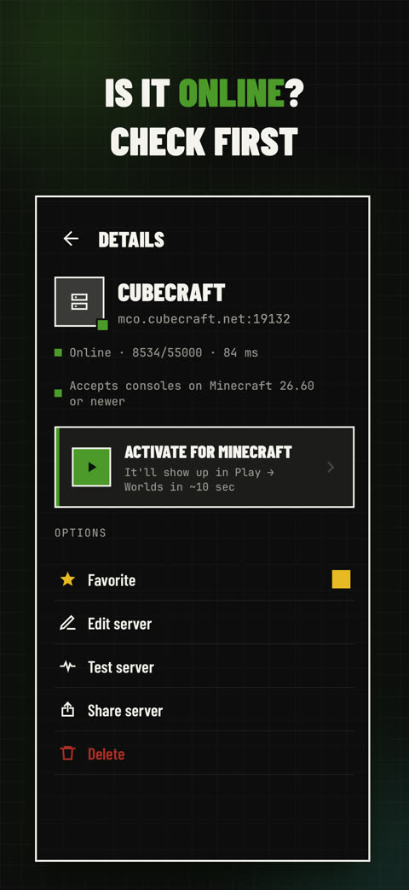
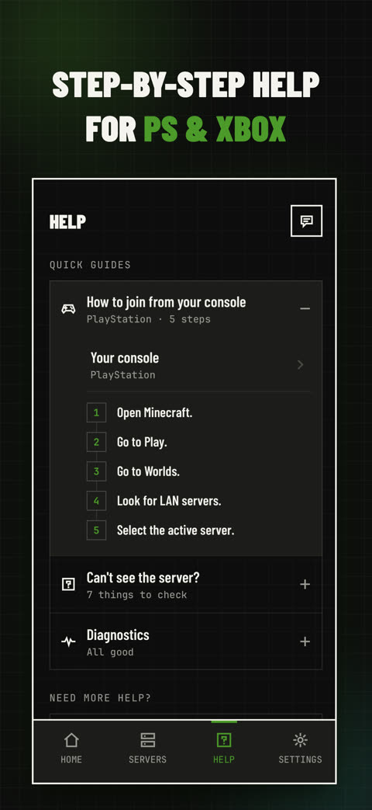
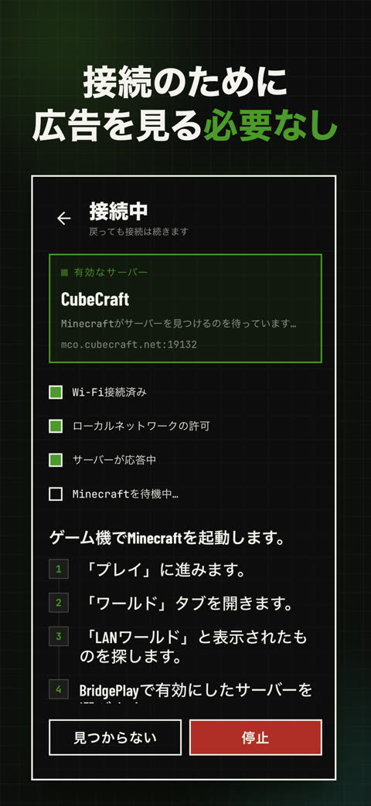
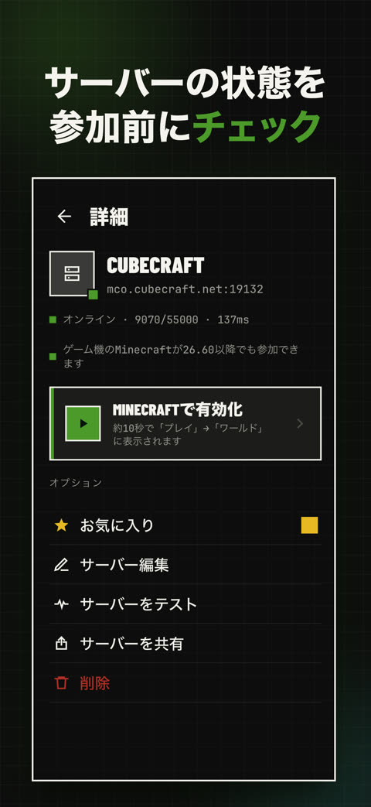
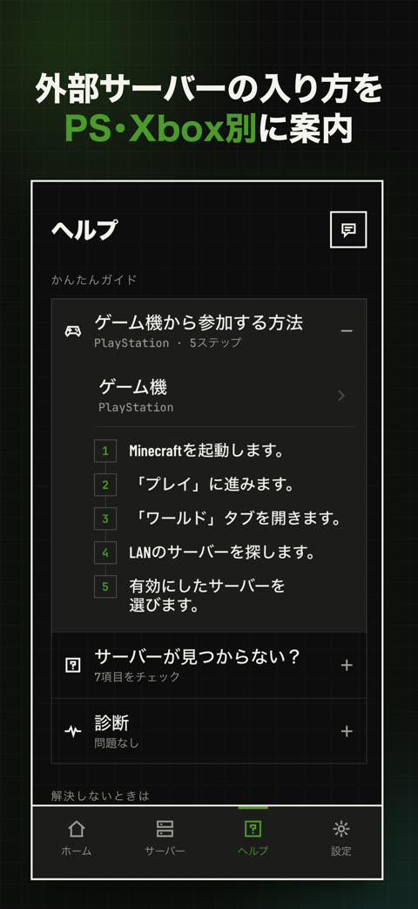
Sin anuncios para conectar
Conectar es gratis, sin videos ni esperas.
Sin DNS, sin PC, sin cuentas
No cambias nada en la consola ni en el router. Todo queda en tu teléfono.
¿Está encendido?
Ves el estado, los jugadores y el ping antes de entrar. Si tu Aternos está apagado, te avisa.
Entrar directo
Cuando la consola entra directo al servidor, puedes cerrar la app y seguir jugando.
Aternos y Geyser
Servidores Bedrock y servidores Java con Geyser (crossplay).
Lista para Minecraft 26.60
Funciona con la versión nueva y con las anteriores.
No ads to connect
Connecting is free: no videos, no waiting.
No DNS, no PC, no account
Nothing to change on your console or router. Everything stays on your phone.
Is it online?
See status, players and ping before you join. If your Aternos server is off, it tells you.
Join directly
When your console joins the server directly, you can close the app and keep playing.
Aternos & Geyser
Bedrock servers and Java servers with Geyser (crossplay).
Ready for Minecraft 26.60
Works with the new version and the earlier ones.
広告を見ずに接続
接続は無料です。動画を見る必要も、待つ必要もありません。
DNSもPCもアカウントも不要
ゲーム機やルーターの設定を変える必要はありません。データはすべてスマホの中に保存されます。
参加前に状態をチェック
オンラインかどうか、人数、Pingが分かります。Aternosのサーバーが停止中なら、それも表示されます。
直接参加
直接参加できたら、アプリを閉じてもそのまま遊べます。
AternosとGeyserに対応
統合版のサーバーと、GeyserでクロスプレイできるJava版サーバーに対応。
Minecraft 26.60に対応
新しいバージョンでも、以前のバージョンでも使えます。
No veo el servidor en Minecraft
- Teléfono y consola en el mismo WiFi (no la red de invitados).
- Revisa que el servidor esté encendido: BridgePlay te lo dice.
- Cierra Minecraft por completo en la consola y ábrelo otra vez. Si no basta, reinicia la consola.
- Apaga y prende el WiFi del teléfono.
En la app, la pestaña Ayuda tiene un diagnóstico que revisa todo esto por ti.
¿Tengo que dejar la app abierta?
Si la consola entró directo al servidor («¡Listo! Ya estás en tu servidor»), no: puedes cerrarla.
Con la conexión de siempre, sí: en iPhone déjala abierta en pantalla; en Android déjala activa (puedes salir de la app, pero no la cierres).
¿Dónde aparece el servidor?
En la versión actual de Minecraft: Jugar → Mundos, en la lista de mundos LAN.
¿Y con Minecraft 26.60 (27 de octubre)?
BridgePlay está lista desde la versión 1.5.0: las consolas con la versión nueva encuentran tu servidor y entran directo, si el servidor ya acepta la conexión nueva de Minecraft. Las versiones anteriores siguen funcionando como siempre.
¿Administras el servidor? Prepáralo para la 26.60.
¿Funciona con Aternos?
Sí, con servidores Bedrock y con servidores Java que tienen Geyser (crossplay). Usa la dirección y el puerto de Bedrock que te muestra Aternos.
¿Funciona en Nintendo Switch?
No. Minecraft en Switch no muestra juegos LAN.
¿Necesito cuenta?
No. Todo se guarda en tu teléfono.
Tengo Minecraft abierto en el mismo teléfono
Ciérralo por completo antes de activar: los dos usan la misma conexión.
I don't see the server in Minecraft
- Phone and console on the same WiFi (not a guest network).
- Make sure the server is online: BridgePlay shows it.
- Fully close Minecraft on your console and open it again. If that's not enough, restart the console.
- Turn your phone's WiFi off and on.
In the app, the Help tab has diagnostics that check all of this for you.
Do I need to keep the app open?
If your console joined the server directly ("Done! You're in your server"), no: you can close it.
With the usual connection, yes: keep it on screen on iPhone; on Android keep it running (you can leave the app, just don't close it).
Where does the server show up?
In current Minecraft: Play → Worlds, in the LAN worlds list.
What about Minecraft 26.60 (October 27)?
BridgePlay is ready since version 1.5.0: consoles on the new version find your server and join directly, if the server already accepts Minecraft's new connection. Earlier versions keep working as always.
Do you run the server? Get it ready for 26.60.
Does it work with Aternos?
Yes, with Bedrock servers and with Java servers that have Geyser (crossplay). Use the Bedrock address and port Aternos shows you.
Does it work on Nintendo Switch?
No. Minecraft on Switch doesn't list LAN games.
Do I need an account?
No. Everything stays on your phone.
Minecraft is open on the same phone
Close it completely before activating: both use the same connection.
Minecraftにサーバーが表示されない
- スマホとゲーム機を同じWi-Fiにつなぎます（ゲスト用のネットワークは使えません）。
- サーバーがオンラインか確認します。BridgePlayで確認できます。
- ゲーム機のMinecraftを完全に終了して、もう一度起動します。それでも直らないときは、ゲーム機を再起動します。
- スマホのWi-Fiをいったんオフにして、またオンにします。
アプリの「ヘルプ」タブにある診断で、これらをまとめて確認できます。
アプリは開いたままにする必要がある？
ゲーム機がサーバーに直接入れた場合（「サーバーに入れました！」と表示されたとき）は、閉じても大丈夫です。
いつもの接続方法の場合は必要です。iPhoneでは画面に表示したまま、Androidでは起動したままにしてください（Androidは、ほかのアプリに切り替えてもOKですが、BridgePlayは終了しないでください）。
サーバーはどこに表示される？
現在のMinecraftでは「プレイ」→「ワールド」の「LAN ゲーム」に表示されます。
Minecraft 26.60（10月27日）にも対応している？
BridgePlayはバージョン1.5.0から対応済みです。新しいバージョンのゲーム機でもサーバーが見つかり、サーバー側が新しい接続方式に対応していれば直接参加できます。以前のバージョンのMinecraftも、これまでどおり使えます。
サーバーを管理している方は、26.60への対応方法をご覧ください。
Aternosで使える？
はい。統合版のサーバーと、Geyserを入れたJava版サーバーに対応しています。Aternosに表示される統合版（Bedrock）用のアドレスとポートを使ってください。
Nintendo Switchで使える？
いいえ。Switch版のMinecraftにはLANゲームが表示されないため、使えません。
アカウントは必要？
不要です。データはすべてスマホの中だけに保存されます。
同じスマホでMinecraftを開いている場合
どちらも同じ接続を使うため、有効化する前にスマホのMinecraftを完全に終了してください。
¿Problemas o preguntas? Escríbenos.Problems or questions? Write to us.困ったことや質問があれば、メールでご連絡ください。
maurizzio.penalba@gmail.com